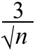

| error ~ normal (0, | ) |
Standard error and bias
When the sample mean is used to estimate a population mean, µ, and the population standard deviation is σ, the error distribution is approximately
| error ~ normal (0, | ) |
Since the error distribution is centred on zero, the estimator is called unbiased.
bias = μerror = 0
The estimator's standard error is the standard deviation of the error distribution,
| standard error = σerror = |
Important property
The error distribution does not depend on the value of the parameter that we are estimating, µ.
As a result, we can find the error distribution in practical problems, provided the population standard deviation, σ, is known.
Soluble sugar in plants
A laboratory procedure for assessing soluble sugar in plants is such that in the range 100 to 200 milligrams (mg) of glucose per gram of dry weight, repeat measurements will follow a normal distribution with mean µ equal to the true glucose level and standard deviation σ = 3.0 mg/g dry weight.
When a plant is tested once, the recorded glucose content is therefore
X ~ normal (μ , σ = 3)
A plant is tested several times, giving a sample mean glucose level  .
.
The sample mean is our best estimate of the population mean, but how accurate is the estimate?
From a sample of size n, the estimation error has distribution,
| error ~ normal (0, σ = |  | ) |
This is illustrated in the following diagram.
Example
Say a particular plant was tested 16 times, giving a sample mean of 137 mg of glucose per gram dry weight. Drag the slider above to show the error distribution for samples of size n = 16.
Our estimate of 137 mg/g dry wt is unlikely to be more than 1.5 from the true glucose content for this plant.